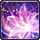
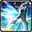
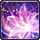
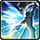
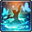
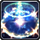

직업 설명초보자에게 권장되는 직업기술이 직관적이고 다루기 쉽다.
난이도
전직 정보
특화 스킬 거룩한 축복
참담한 마음
절제
거룩한 축복
참담한 마음
절제
피의 백합 3단계를 소비하여 대상과 그 주위 적에게
무속성 범위 마법 공격을 가합니다.
위력: 1240
2번째 대상부터는 위력이 50% 감소합니다.
20초 동안 자신의 회복마법 회복량이 20% 증가하고,
자신과 반경 30m 이내에 있는 파티원이
받는 피해량이 10% 감소합니다.
직업 설명치유의 힘을 지닌 요정을 사역하며 보호막이 특징인 직업.파티의 안정성을 높혀주지만 긴급 상황시의 대처 능력은 낮다.
난이도
전직 정보
특화 스킬 야전치유진 연환계 질풍노도계
15초 동안 방어막을 생성합니다.
지속시간 동안 범위 안의 파티원이 받는 피해를
10% 감소시키고 HP를 지속적으로 회복합니다.
지속 회복력: 100
추가 효과: 요정 에테르 10 증가
발동 조건: 에테르 순환
극대화될 확률을 10% 증가시킵니다.
질풍계: 10초동안 이동 속도 향상
노도계: 20초동안 받는 피해량 10% 감소
직업 설명별의 힘과 점지한 카드에 따라 다양한 효과를 발휘하는 직업. 강력한 버프로 파티의 피해량을 상승시킨다.
난이도
전직 정보
특화 스킬 점복 지상의 별 대우주
별의 지배자는 10초 후 큰별의 지배자로 강화됩니다.
별의 지배자 또는 큰별의 지배자 상태일 때 재사용하거나, 큰별의 지배자로 변화한 후
10초가 지나면 지상의 별이 소멸하며 이때 범위 안의 적에게 무속성 마법 공격을 가하고
범위 안의 파티원을 회복합니다.
별의 지배자 위력: 205 별의 지배자 회복력: 540
큰별의 지배자 위력: 310 큰별의 지배자 회복력: 720
자신을 중심으로 주위 적에게 무속성 범위 마법 공격을 가합니다.
실행 시 소우주로 변화합니다.
위력: 250
2번째 대상부터는 위력이 40% 감소합니다.
추가 효과: 15초 동안 자신과 주위 파티원에게 대우주를 부여합니다.
지속시간이 끝나거나 소우주를 실행하면, 지속시간 동안 대상이 받은 누적 피해량에
비례하여 대상의 HP를 회복합니다. 회복량: 회복력 200+누적 피해량의 50%
단, 회복량은 대상의 최대 HP를 넘지 못합니다.
고유 재사용 대기 시간이 적용됩니다. 소비 : MP 600
직업 설명현학도구를 사용해 공격과 치유를 동시에 하는 직업기동력이 우월하며 다양한 자원을 활용한다.
난이도
전직 정보
특화 스킬 심각인 케이라콜레 프네우마
대상에게는 심각인[회복]을 부여합니다.
효과 적용 중에 특정 공격 마법을 시전하면 심각인[회복]
대상이 회복됩니다.
지속시간: 해제 시까지
받는 피해량을 10% 감소시키고, 자신의 MP를
최대 MP의 7%만큼 회복합니다.
타우로콜레 효과와 동시에 부여할 수 없습니다.
추가 효과: 대상의 HP를 15초 동안 지속적으로 회복합니다.
지속 회복력: 100
심각인[회복] 대상의 HP를 회복합니다.
위력: 330
심각인 회복력: 170
2번째 대상부터는 위력이 40% 감소합니다.
추가 효과: 자신과 반경 20m 안에 있는 파티원의 HP를 회복합니다.
회복력: 600
고유 재사용 대기 시간이 적용됩니다. 소비 : MP 700